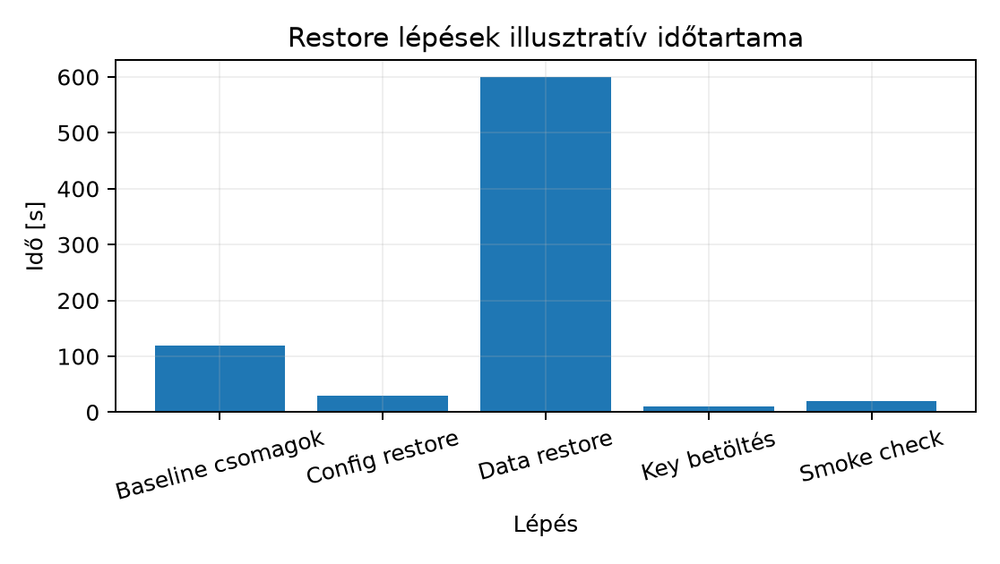

A d096–d099 fejezetekben a backupstratégia, a restic repository
életciklusa és a konzisztens adatmentés felépült. A backup azonban csak
akkor tekinthető működőnek, ha egy új, üres VM-re kizárólag a manifest
és a repository alapján vissza tudjuk állítani a szolgáltatást, és a
helyreállított rendszer adat- és funkcionális invariánsait igazolni
tudjuk. Ez a labor ezt a bizonyítást végzi el: a labapp
nevű C++ szolgáltatást és a hozzá tartozó PostgreSQL adatbázist új VM-re
állítjuk vissza, mérjük a recovery time objective-öt (RTO) és a recovery
point objective-öt (RPO), majd elvégezzük a failbacket és a lab
cleanupot.
A restore (helyreállítás) az a folyamat, amely során egy biztonsági másolatból új üzemeltetési példányt hozunk létre, és a szolgáltatást ismét használatra kész állapotba helyezzük. A restore addig nem bizonyított, amíg az alkalmazás smoke tesztje, az adatintegritás-ellenőrzés és a várt viselkedés nem teljesül.
Recovery Point Objective (RPO): az az időtartam, ameddig az adatvesztés a katasztrófa bekövetkezésekor elfogadható. Képlettel:
ahol a katasztrófa időbélyege, pedig az utolsó sikeres, ellenőrzött biztonsági mentés időpontja. A mértékegység másodperc, perc vagy óra, a szolgáltatás üzleti igényétől függően.
Recovery Time Objective (RTO): az az időtartam, amely a katasztrófa bekövetkezésétől a szolgáltatás újra egészséges állapotáig eltelik:
ahol az az időpont, amikor a smoke teszt sikeresen lefut az új példányon.
Backup manifest (helyreállítási jegyzék): egy verziózott, gépi feldolgozásra alkalmas fájl, amely felsorolja a helyreállításhoz szükséges komponenseket – package, config, data, key –, azok forrását, verzióját és hashét. A manifest a restore egyetlen megbízható belépési pontja, ezért a változtatásokat ugyanolyan verziókezelési folyamattal kell kezelni, mint az alkalmazáskódot.
A restore sorrendje nem a manifest listázási sorrendjét követi, hanem a dependenciákat. Általános ajánlott sorrend:
A Damaged repository fixture egy olyan szándékosan sérült restic repository, amelyből egy vagy több blob hiányzik. Ez a helyreállítási próbát meghiúsíthatja, és a másodlagos repository-copy használatát kényszeríti ki.
A Hiányzó kulcs fixture a restic repository
titkosítási jelszavának elvesztését szimulálja. A restic
check vagy restore ilyenkor kéri a
repository password értékét, és a pontos kulcs nélkül a
restore meg sem kezdhető.
A labor topológiája:
| Host | Szerep | IP cím | Diszk | Megjegyzés |
|---|---|---|---|---|
labhost01 |
forrás, ahol a labapp és PostgreSQL fut |
192.0.2.10 | lab-disk01 |
a katasztrófa helyszíne |
labrestore02 |
új, üres VM a restore célállomáshoz | 192.0.2.20 | lab-disk02 |
baseline telepítés után |
labnfs |
restic repository tároló | 192.0.2.30 | lab-backup-disk |
primary és replica repository is elérhető NFS-en |
A manifest JSON formátumú, és a source oldalon jön létre, mielőtt a katasztrófa bekövetkezik:
{
"service": "labapp",
"manifest_version": "1",
"created_at": "2025-01-15T10:00:00Z",
"packages": [
"postgresql=16.1",
"liblabapp1=2.0.3",
"curl=8.5.0"
],
"config_files": [
"/etc/labapp/labapp.yaml",
"/etc/postgresql/16/main/pg_hba.conf"
],
"data_paths": [
"/var/lib/labapp/data/",
"/var/lib/postgresql/16/main/"
],
"secret_ref": "labapp-tls-key-v1",
"backup_repo": "restic:http://192.0.2.30:8000/labapp-repo",
"backup_snapshot_id": "latest"
}A secret_ref nem a titkos kulcs értékét, hanem a secrets
managerben tárolt bejegyzés azonosítóját tartalmazza.
A forrás labhost01-en a PostgreSQL adatbázist
konzisztens pg_dump fájlba mentjük, majd a restic
repositoryba toljuk:
# labhost01, UID=1000, labuser
sudo -u postgres pg_dump -Fc labapp > /tmp/labapp.dump
restic -r /mnt/labnfs/labapp-repo backup /tmp/labapp.dump /var/lib/labapp/data /etc/labapp /etc/postgresql/16/main
restic -r /mnt/labnfs/labapp-repo snapshotsA backup után ellenőrizzük a repositoryt:
restic -r /mnt/labnfs/labapp-repo checkVárható kimenet: found 1 snapshots,
repository ok.
A labrestore02 VM-re Ubuntu Server 24.04 LTS települ,
majd elvégezzük az alap konfigurációt:
# labrestore02, UID=0, root
hostnamectl set-hostname labrestore02
ip addr add 192.0.2.20/24 dev enp1s0
ip route add default via 192.0.2.1
apt-get update
apt-get -y install ubuntu-standardVárható postcondition: a host elérhető SSH-n, a
192.0.2.20 pingelhető a lab hálózatból, a
labrestore02 név feloldódik.
A manifestben szereplő csomagok telepítése a placeholder értékek alapján (a pontos verziókat az Ubuntu 24.04 release manifestje határozza meg, itt illusztratív):
# labrestore02, UID=0, root
apt-get -y install postgresql liblabapp1 curlA config fájlokat a restic repositoryból állítjuk vissza:
# labrestore02, UID=0, root
restic -r /mnt/labnfs/labapp-repo restore latest --target / --include /etc/labapp --include /etc/postgresql/16/mainUtána a config integritását hash-összehasonlítással igazoljuk a manifestben rögzített értékhez képest.
Az adatfájlokat a restic restore parancs a
/var/lib/labapp/data alá teszi, a PostgreSQL dumpot pedig a
psql segítségével visszatöltjük:
# labrestore02, UID=0, root
restic -r /mnt/labnfs/labapp-repo restore latest --target / --include /var/lib/labapp/data --include /tmp/labapp.dump
sudo -u postgres createdb labapp
sudo -u postgres pg_restore -d labapp /tmp/labapp.dumpA privát kulcsot a secrets managerből töltjük be, nem a backupból:
# labrestore02, UID=0, root
cp /mnt/labsecrets/labapp-tls.key /etc/labapp/tls.key
chmod 600 /etc/labapp/tls.key
chown labapp:labapp /etc/labapp/tls.keyA key labapp-tls-key-v1 azonosítóval ellenőrizhető a
vaultban.
Indítjuk a szolgáltatásokat:
# labrestore02, UID=0, root
systemctl start postgresql
systemctl start labappA smoke teszt:
# labrestore02, UID=0, root
curl -fsS https://localhost:8443/health
sudo -u postgres psql -d labapp -tAc "SELECT count(*) FROM labapp.events"
sha256sum /var/lib/labapp/data/events.jsonVárható kimenet: a health endpoint {"status":"ok"}
értéket ad, a rekordszám megegyezik a backup pillanatban rögzített
értékkel, a hash pedig a source oldalon a backup előtt mért
hash-sel.
A restore idő méréséhez rögzítjük az incident és a sikeres smoke időbélyeget:
# labhost01, katasztrófa pillanata
date -u +%Y-%m-%dT%H:%M:%SZ
# labrestore02, sikeres smoke pillanata
date -u +%Y-%m-%dT%H:%M:%SZA két időbélyeg különbsége az RTO. Az RPO meghatározásához a source oldalon a backup után beszúrt rekord jelenti az el nem mentett adatot; a backup időpontja és a katasztrófa időpontja közti időtartam az RPO felső határa.
A restore lépések becsült időtartamát a következő illusztratív ábra mutatja:

Numerikus táblázat:
| Lépés | Várt idő [s] |
|---|---|
| Baseline csomagok | 120 |
| Config restore | 30 |
| Data restore | 600 |
| Key betöltés | 10 |
| Smoke check | 20 |
A tényleges mérés ebben a laborban nem futott; a fenti értékek modellként szolgálnak. A szabályok szerint ténylegesen mért adatot jelölve kell megkülönböztetni.
restic restore hibával leáll,
például LoadTree: blob <id> not found.restic -r /mnt/labnfs/labapp-repo check lefuttatása, amely
kiírja a hiányzó blobot.restic -r /mnt/labnfs/labapp-repo-replica restore latest --target /.restic -r ... restore
futtatásakor a program kéri a repository passwordöt, és a parancs nem
folytatódik.restic snapshots
parancs is ugyanúgy jelszót kér, tehát nem a parancs hibája, hanem a
kulcs hiánya. Ellenőrizzük a secrets manager bejegyzését:
vault kv get secret/labapp-restic-key (labban dummy).RESTIC_PASSWORD
környezeti változóval futtatjuk a restore-t.A manifestben rögzített liblabapp1=2.0.3 csomag nem
található, mert a repository csak a 2.0.2 verziót
tartalmazza. A hiba a apt-get install során derül ki. A
megoldás a manifest javítása a tényleges elérhető verzióra, vagy a
hiányzó verzió felvétele a lab belső repositoryjába. A changeset
egyetlen manifest módosítás, majd a apt-get install
ismételt futtatása.
Magyarázd el, miért nem elegendő a restic snapshots
sikeres kimenete a backup rendelkezésre állásának bizonyításához. Milyen
ellenőrzéseket kell futtatni, és mi a közös hibamód, ha a restore-t a
source hoston futtatjuk?
A fenti kidolgozott példa alapján hajtsd végre a teljes restore-t a
labrestore02 VM-re. Hozd létre a manifestet, készíts
backupot a source oldalon, végezd el a baseline, package/config/data/key
restaurálást, indítsd a szolgáltatást, és futtasd a smoke tesztet. Mérd
az RTO-t és az RPO-t, ahol az incident előtti utolsó rekord beszúrása a
backup után, de még a katasztrófa előtt történik.
Szimuláld a damaged repositoryt: törölj egy blobot a primary
repository data/ könyvtárából, futtass
restic check és egy restic restore parancsot,
majd válts a replica repositoryra. Ezután szimuláld a hiányzó kulcsot: a
RESTIC_PASSWORD beállítás nélkül próbálj restore-t, figyeld
meg a hibát, töltsd be a kulcsot a vaultból, és fejezd be a
helyreállítást. Ellenőrizd az adatintegritást a smoke teszttel.
A restic snapshots csak azt bizonyítja, hogy a
repository állapotát a restic el tudta olvasni a source hoston, ahol a
repository lokálisan elérhető. Nem bizonyítja, hogy az adat ténylegesen
visszaállítható egy új környezetbe, mert:
check nélkül csak a
restore közben jelenik meg.A bizonyító erejű restore feltétele: új, üres VM, manifestből induló csomagtelepítés, config restore, adat restore, key betöltés, majd smoke teszt és adatintegritás-összehasonlítás.
Postcondition: a tanuló el tudja magyarázni a backup és a bizonyított restore közötti különbséget, és fel tudja sorolni a critical path lépéseit.
A végrehajtás lépései:
pg_dump és restic backupot, majd
restic check-et.labapp.events táblába, ami a backup után, de a katasztrófa
előtt keletkezik, majd állítsd le a source szolgáltatást (szimulált
katasztrófa).labrestore02 VM-en telepítsd a baselinet, majd a
manifest csomagjait.labapp szolgáltatást.Postcondition: a labrestore02 szolgáltatás sikeresen
fut, a curl https://localhost:8443/health
{"status":"ok"} értéket ad, a rekordszám eggyel kisebb,
mint a katasztrófa előtti utolsó érték, az elveszett rekord
azonosítható. Az RTO és RPO értékek rögzítve vannak a lab
jegyzőkönyvben.
A damaged repository szimulálásához:
data/ könyvtárában keress egy
blobot, és töröld azt:
rm /mnt/labnfs/labapp-repo/data/ab/cdef....restic -r /mnt/labnfs/labapp-repo check
parancsot, ami a hiányzó blobot jelzi.restic -r /mnt/labnfs/labapp-repo-replica restore latest --target /.A hiányzó kulcs szimulálásához:
RESTIC_PASSWORD környezeti változót, és
futtass restic -r /mnt/labnfs/labapp-repo-replica snapshots
parancsot: a program jelszót kér.labapp-restic-key értéket,
állítsd be a RESTIC_PASSWORD változóban, és futtass egy
restic check parancsot.Postcondition: a sérült primary repository nem használható restore-ra, de a replica sikeresen visszaállítja a teljes adatot. A hiányzó kulcsos esetben a restore nem kezdhető meg a vaultból nyert kulcs nélkül. A smoke teszt és a hash ellenőrzés sikeres.
A biztonsági mentést csak akkor tekinthetjük működőnek, ha a restore-t sikeresen végrehajtottuk egy új, üres VM-re. A restore során a manifest a hibamentes belépési pont, amely felsorolja a package, config, data és key elemeket. A visszaállítási sorrend a dependenciákat követi: csomagok, konfiguráció, adatok, végül a kulcsok betöltése a secrets managerből. A méréshez rögzítjük a katasztrófa és a sikeres smoke időbélyegeket, amelyekből az RTO és az RPO számítható. A damaged repository és a hiányzó kulcs fixture valós hibamódokat mutat be; mindkettőből a replica és a vault segítségével térünk vissza.
Továbbhasznált definíciók:
- Restore: új, üres környezetben a biztonsági
másolatból létrehozott, működő szolgáltatáspéldány.
- RPO: az elfogadható adatvesztés időtartama a
legutóbbi sikeres backup és a katasztrófa között.
- RTO: a katasztrófa bekövetkezésétől a szolgáltatás
újra egészséges állapotáig eltelt idő.
Forráskiindulópontok (nem olvasott, nem ellenőrzött bizonyítékok ebben a kérésben):
Ellenőrzési hiányok: a restic pontos verziója és a
check/restore kimenetek pontos szövege az
Ubuntu 24.04 LTS csomagverziójától függ; a pg_dump és
pg_restore részletei a PostgreSQL 16 kiadásához
igazítandók. A liblabapp1 és a labapp
szolgáltatás a labor saját fixture-je, a manifestben szereplő verziók
illusztratív jellegűek. A tényleges RTO/RPO mérés ebben a laborban nem
futott; a fenti értékek hipotetikus modellek. A vault
vault kv get parancs csak dummy, a tényleges secrets
manager integráció a labor környezetet üzemeltető infrastruktúra
függvénye. A lab cleanup és failback pontos lépéseit a hypervisor és a
network inventory határozza meg.